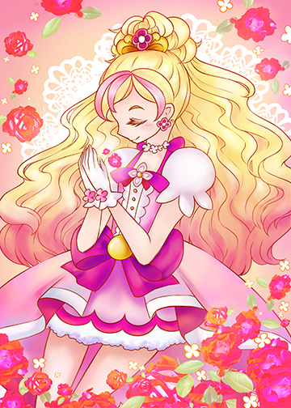

Here is an illustration I drew, a fanart piece for a Japanese anime called Precure. I used a two drawing programs to draw this illustration: Painttool Sai and Clip Studio Art. It's one of my favorite illustrations because of the composition. The flowers framing around the edges brings the piece together.